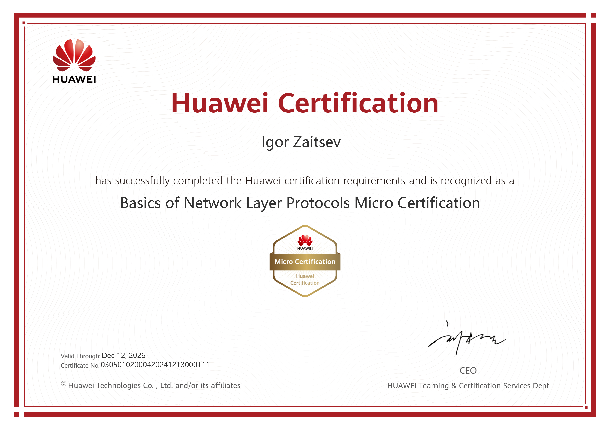
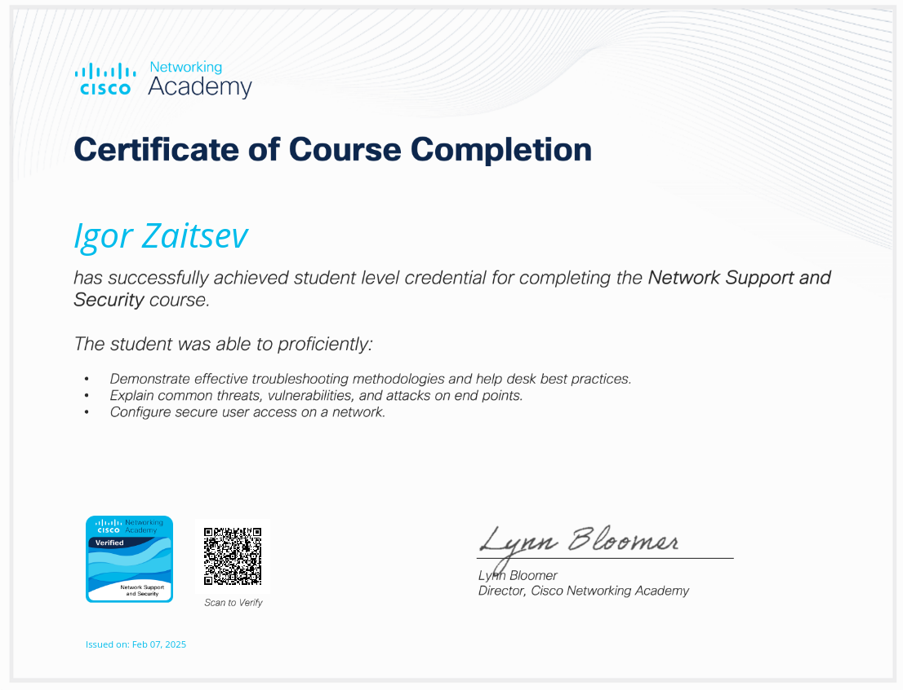
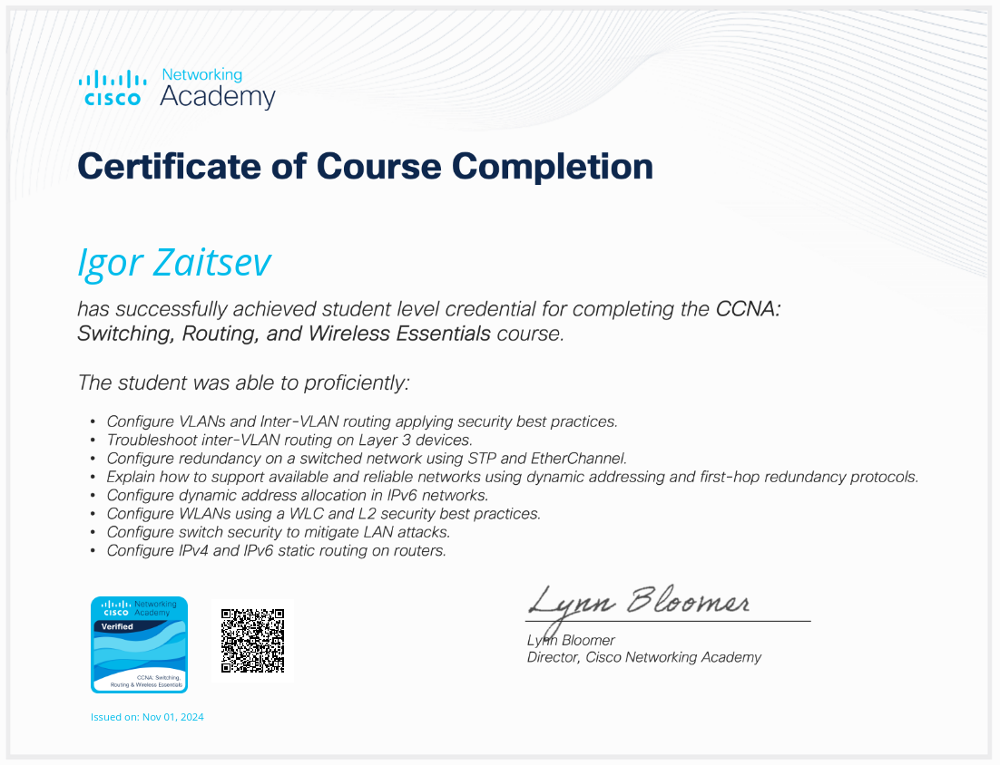
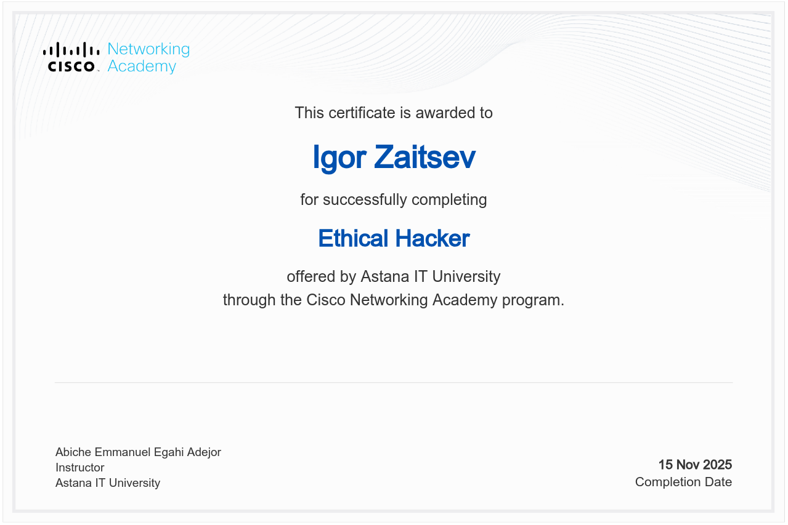
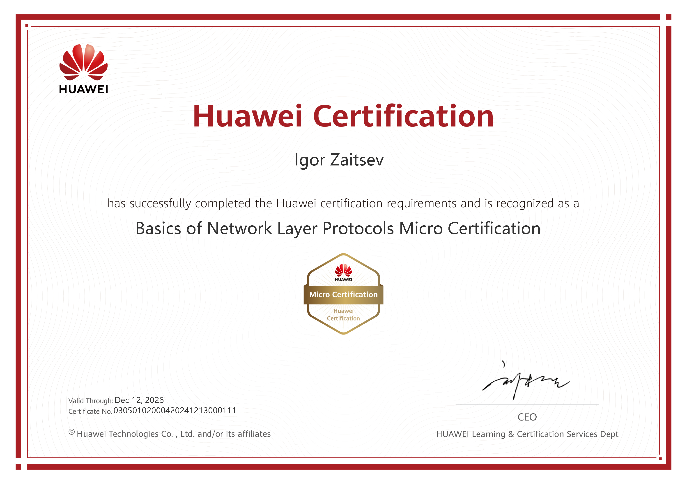
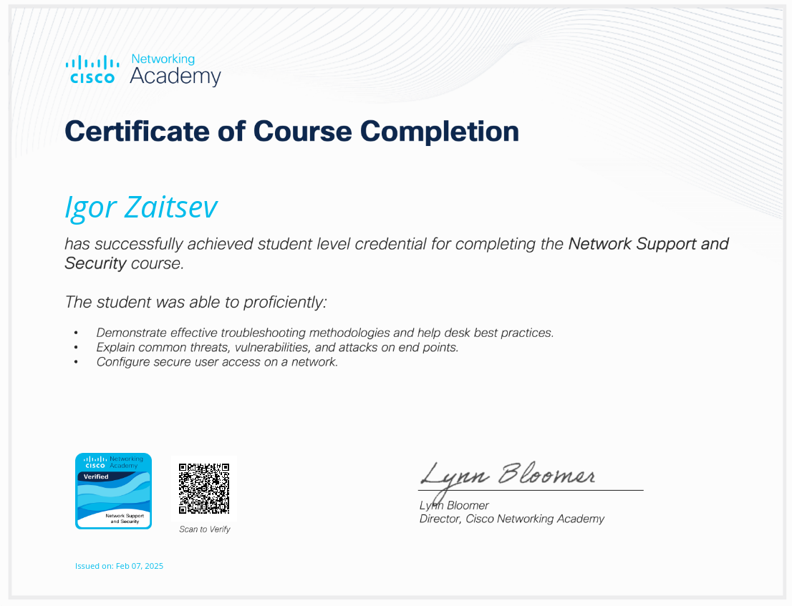
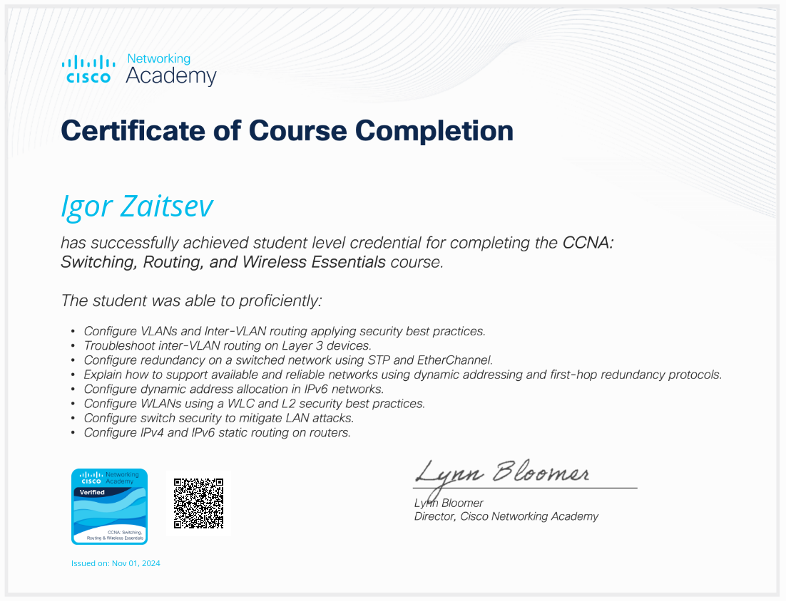
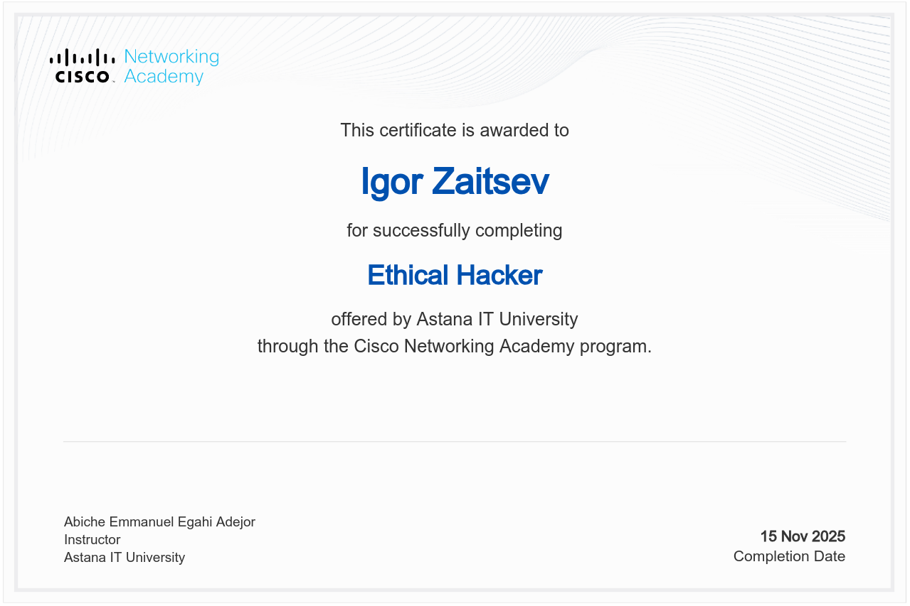

Обо мне
Я специалист по кибербезопасности с реальным опытом и живым интересом к защите цифровых систем. Работа с информационной безопасностью и сетевыми технологиями позволяет мне глубоко анализировать и обеспечивать безопасность информационных систем на разных уровнях. Мне нравится разбираться в сложных задачах, искать уязвимости и находить практические решения для защиты данных.
Образование
Astana IT University, Астана (сентябрь 2023 – июнь 2026)
Специальность: Информационная безопасность (Cybersecurity)
- Защита сетевых инфраструктур от киберугроз
- Настройка сетевых устройств: маршрутизаторы, коммутаторы, межсетевые экраны
- Тестирование на проникновение для оценки защиты систем
Навыки
- Анализ уязвимостей и проведение тестирования на проникновение.
- Проектирование и защита сетевой инфраструктуры; анализ сетевого трафика.
- Работа с инструментарием для Red Team / аудит: Havoc C2, Sliver, Metasploit, Airgeddon, Bettercap.
- Разработка скриптов и автоматизация: Python, Bash, C++.
- Развертывание и анализ логов с использованием Elasticsearch & Kibana.
Галерея моих сертификатов
 







Проекты
-
Vulnerability Scanning with Kali Tools (учебный лабораторный проект)
Провёл лабораторную работу по сканированию уязвимостей с использованием Kali Linux: Nmap и Greenbone Vulnerability Management (GVM). Выполнил сетевое сканирование, идентификацию сервисов и оценку обнаруженных уязвимостей. В проекте представлены результаты сканирования.
-
Название проекта
Краткое описание проекта. Смотреть
Опыт работы / практика
Производственная практика — АО «Казахстанская Жилищная Компания» (июнь–июль 2025)
- Тестирование SOC- и DLP-систем: анализ алертов, классификация инцидентов, составление отчётов
- Разработка и интеграция Docker-контейнера для автоматической пересылки логов
- Работа с водяными знаками и маркировкой документов для предотвращения утечек данных
- Изучение международных стандартов ISO/IEC 27001 и 27002 и их применение
- Анализ нормативных документов РК и взаимодействие с профильными органами ИБ
Полная характеристика доступна для скачивания: Скачать PDF
Контакты
Email: id.zaitsev@gmail.com
GitHub: InKO0505